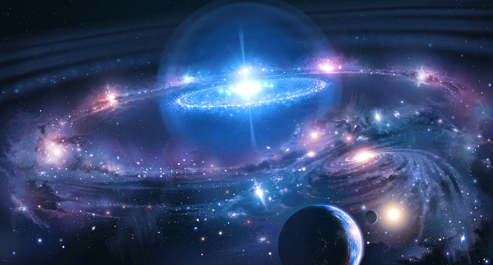

Voltar
O DEUS COMO CRIADOR
No princípio, em um sussurro divino,
Deus, o Criador, fez a Terra e o céu brilhante,
Com mãos que moldaram os mundos com carinho,
E a vida em cada canto, um dom radiante.
Com a luz de estrelas, o firmamento bordou,
A noite e o dia, em dança infinita,
A lua, o sol, o ciclo que criou,
Um espetáculo celestial, tão bonito.
A terra foi coberta de verde e azul,
Mares e montanhas, florestas a crescer,
Deus pintou com amor, em cada matiz,
A beleza da vida, a grandeza do ser.
Nos animais, colocou sabedoria,
Nas aves, o canto que ecoa nos céus,
E ao homem deu o dom da harmonia,
Para cuidar da criação com mil afetos seus.
Assim, a natureza, em esplendor sem fim,
Revela a mão do Criador, sábio e gentil,
E em cada ser vivo, a chama divina em mim,
Lembra-nos que Deus é amor, e isso é o mais sutil.
O Criador, em sua majestosa obra,
Deu-nos o mundo, um presente sem igual,
E em cada ser vivente, uma história que sobra,
Deus como criador, em sua glória celestial.
